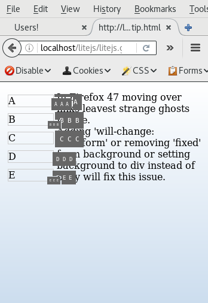

In Firefox 47 moving over links leavest strange ghosts visible. Adding 'will-change: transform' or removing 'fixed' from background or setting background to div instead of body will fix this issue. 